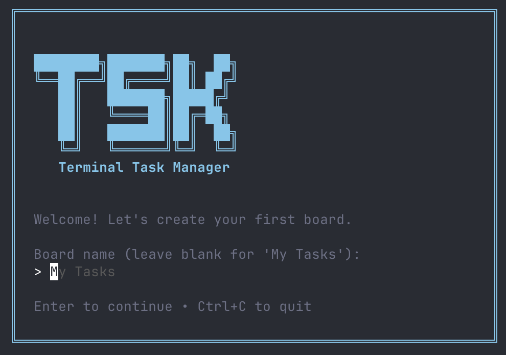
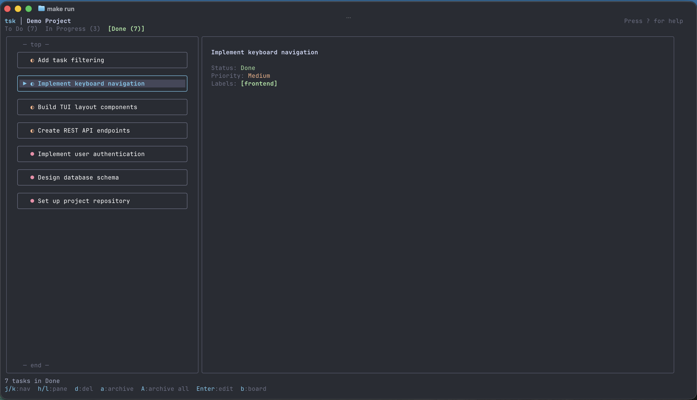
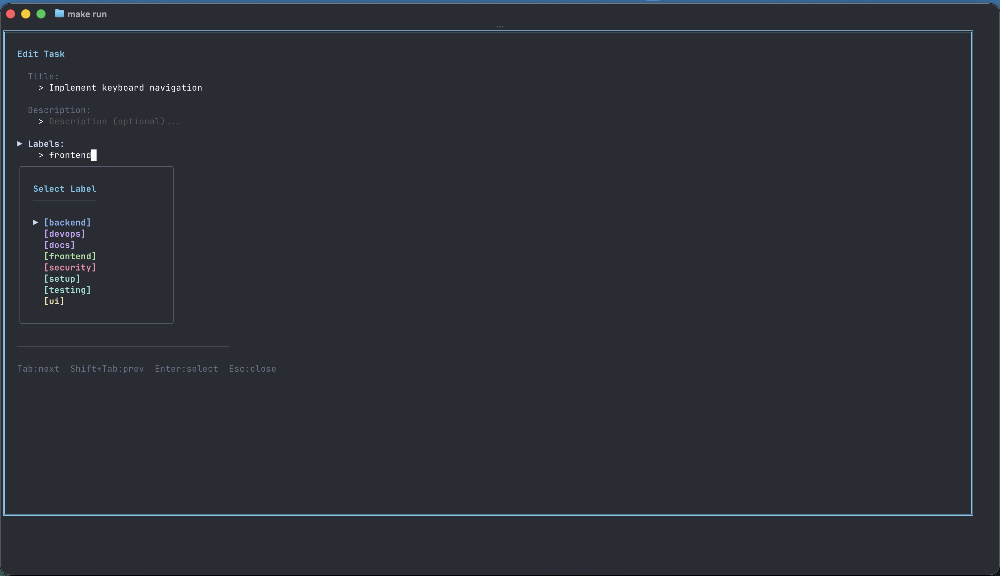
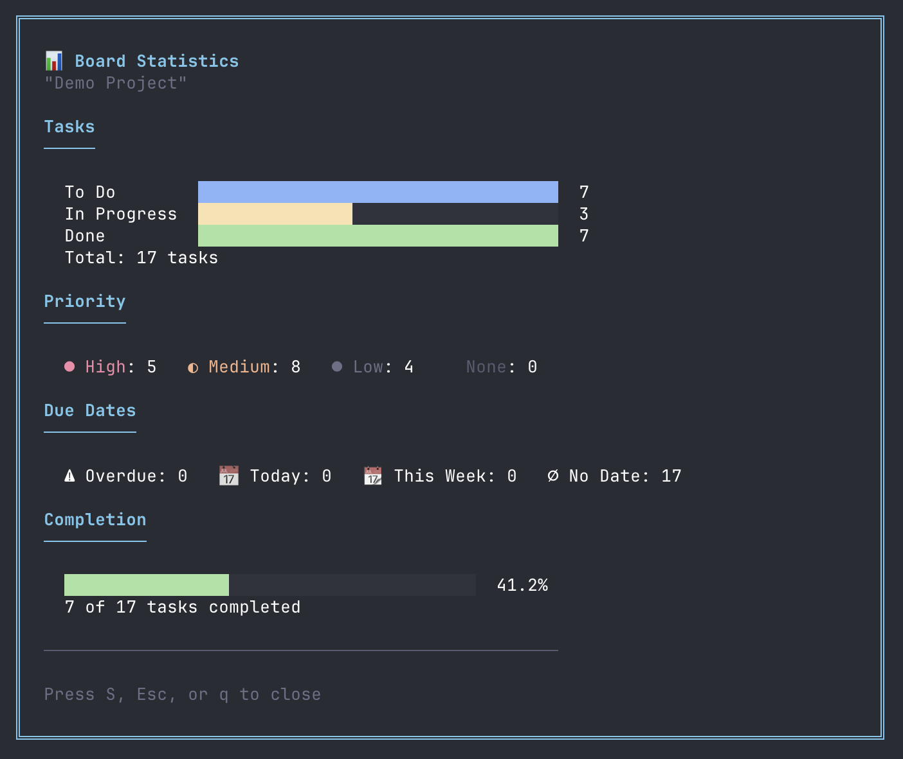

A keyboard-driven task manager for people who live in the terminal.
Three panes (To Do, In Progress, Done) for visual task tracking. Move tasks between stages with a single keystroke.
Navigate with h/j/k/l keys. No mouse required. Blazingly fast keyboard-driven workflow.
Create separate boards for different projects. Switch between them instantly with b key.
Set High/Medium/Low priority with 1/2/3 keys. Tag tasks with custom labels for filtering.
Track deadlines with due date support. Quick-set with keywords like "tomorrow" or "next week".
Made a mistake? Press u to undo. Full history support so you never lose work.
# Add the tap and install
brew tap Coleim/tsk https://github.com/Coleim/tsk.git
brew install tsk
# One-line install
curl -sSL https://raw.githubusercontent.com/Coleim/tsk/main/install.sh | bash
# Requires Go 1.21+
go install github.com/coliva/tsk/cmd/tsk@latest
# Clone and build
git clone https://github.com/Coleim/tsk.git
cd tsk
make build
sudo mv bin/tsk /usr/local/bin/

Welcome screen

Main task view

Task details

Statistics dashboard